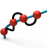
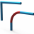

12.1. Drafting
Commands to create points and curves in the Drafting menu:
Create points. → | |
Create one or several points on a face. → | |
 | Generate one or more points on a curve, boundary or edge. → |
 | Create one or several points at the intersections of curves, curves with a face or a mesh. → |
Project points onto entities or onto a workplane. → | |
 | Create one or several lines. → |
 | From a straight line or a straight curve segment, create a parallel translated line or a line at an angle. → |
Create a rectangle. → | |
Create center lines on circles and arcs. → | |
Create a circle or a circular arc. → | |
Generate an ellipse. → | |
 | Create straight or round slot contour. → |
 | Create a polygon. → |
 | → Create a fillet between several lines. |
→ Create chamfers between several lines. | |
→ Create an angle-bisecting curve between two straight curves. | |
 | Use criteria to find all required corners of a contour and round or chamfer them. → → |
 | Insert predefined 2D undercuts. → → |
 | Reset undercuts, fillets, and chamfers on sharp-edged corners. → → |
 | Trim 2D corners. → → |